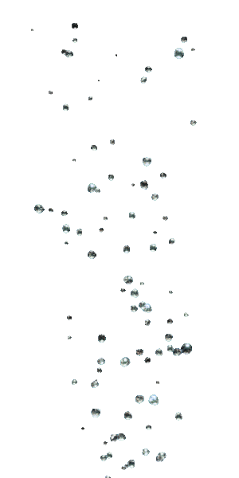
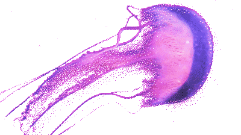
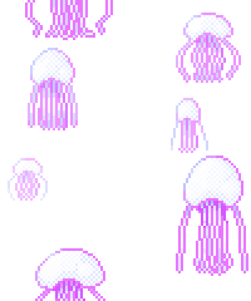
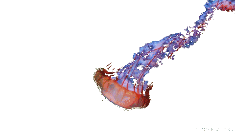
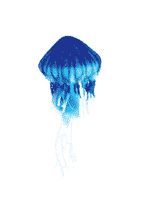

About Jellyfish
해파리는 대체로 투명하며, 갓 둘레에 많은 촉수를 가지고 있다.
촉수에는 자세포(쏘기세포)가 있어 동물분류학상 자포동물(刺胞動物)문에 속한다.
젤리 같은 몸을 가져서 영어로는 젤리피시(jellyfish)라 부른다.
정약전의 「자산어보」에는 해파리를 ‘해타(海鮀)’라 하고, 속명을 해팔어(海八魚)라고 하였는데, 해타는 바다의 모래무지란 뜻이다. ‘타’는 뱀을 뜻하기도 하는데, 길게 늘어진 촉수가 뱀처럼 보여 붙은 이름일 듯하다.
속명 해팔어는 해파리 발음을 따온 것으로 추정된다.

해파리는 크기가 1~2㎜밖에 안 되는 아주 작은 종류도 있지만, 1m가 넘는 큰 종류도 많아 해수욕장에서도 흔히 눈에 띈다.해파리 모양은 종, 접시, 우산을 닮은 것 등 다양하며, 몸이 방사대칭인 특징이 있다. 갓 주변에는 많은 촉수가 있으며, 이것을 사용하여 먹이를 잡아먹는다.
해파리는 고등동물이 가지고 있는 호흡기관, 순환기관, 소화기관이 없어 몸 구조가 단순하다.
몸에 강장(腔腸)이라 불리는 빈 공간이 있어 이곳에서 소화와 호흡 등 생리작용이 일어난다.
해파리 몸의 95% 이상은 물로 이루어져 있어, 물 밖에서는 원형을 유지하기 어렵다.

해파리는 촉수에 있는 자세포로 먹이를 마비시켜 잡아먹는다. 촉수에 먹이동물이 닿으면 작살같이 생긴 자세포가 발사되어 먹이동물을 찌른다. 이때 독성분이 주입되고 쏘인 동물은 마비되는데, 해파리는 마비된 먹이를 몸 안에서 소화시킨다.
큰 해파리들은 물고기를 잡아먹기도 하며, 작은 해파리는 동물플랑크톤을 주로 먹는다. 식성은 성장하면서 바뀌기도 한다. 보름달물해파리의 에피라(ephyra) 유생은 규조류나 편모조류를 먹고, 작은 메두사가 되면 요각류와 지각류 같은 작은 갑각류 플랑크톤을 주로 먹는다. 대신 해파리는 바다거북이나, 개복치, 병어, 쥐치 등의 먹이가 된다.
